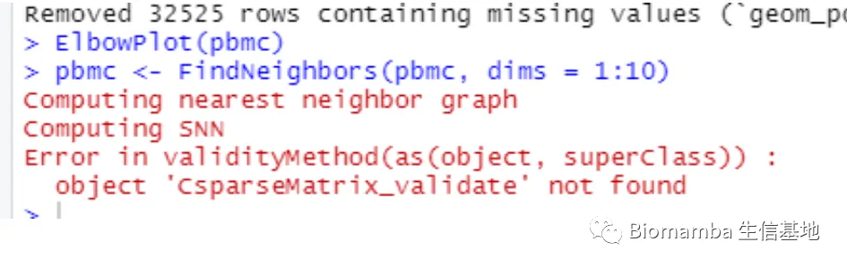
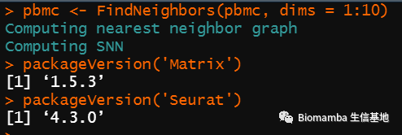

答读者问| 22.object 'CsparseMatrix_validate' not found
原文：https://mp.weixin.qq.com/s?__biz=MzAwMzIzOTk5OQ==&mid=2247496273&idx=1&sn=fd5a92dd7fdc349b1624784ca74b1220&chksm=9b3c8b01ac4b0217cf06d89bfea49c3fa0c9b580957338c0cc8f55ede3e8f65d6d7162ae27e3#rd 合集：单细胞教程全收录 / 答读者问
问题
最近发现很多同学在运行FindNeighbors() 函数是会遇到object 'CsparseMatrix_validate' not found 报错，看来是有必要来解决一下：

如何解决问题
我捣鼓了一番发现还是版本问题，好在我们发放教程一直都是以Rmarkdown的形式，最后都有通过sessionInfo() 发布版本信息。观察了一下，Seurat的4.2.2版本及以后容易出现这一问题：
packageVersion('Seurat')
## [1] '4.3.0'
这主要是由于Matrix这个包不兼容导致的，卸载后安装上对应版本即可：
-
-
- *
-
packageurl <- "https://mirrors.bfsu.edu.cn/CRAN/src/contrib/Matrix_1.5-3.tar.gz"install.packages(packageurl, repos=NULL, type="source")library(Matrix)library(Seurat)
然后就搞定啦：

往期回顾
答读者问（十一）如何一次性读取一个目录下的cellranger输出文件？
答读者问（十二）ERROR: have no zero exit status
答读者问（十三）查看Seurat对象时的ERROR：type='text'
答读者问（十五）稀疏矩阵转matrix, as.matrix函数是下下策
答读者问（十九）R语言内存问题-Error: cannot allocate vector of size ** Gb

如何联系我们
 公众号后台消息更新不及时，超过48h便不允许回复读者消息，这里给大家留一下领取资料、免费服务器的微信号 ，方便各位随时交流、提建议（由助理接待）。此外呼声一直很高的交流群 也建好了，欢迎大家入群讨论：永久免费的千人生信、科研交流群
公众号后台消息更新不及时，超过48h便不允许回复读者消息，这里给大家留一下领取资料、免费服务器的微信号 ，方便各位随时交流、提建议（由助理接待）。此外呼声一直很高的交流群 也建好了，欢迎大家入群讨论：永久免费的千人生信、科研交流群
大家可以阅读完这几篇之后添加给生信入门初学者的小贴士 如何搜索公众号过往发布内容

 您点的每个赞和在看，我都认真当成了喜欢
您点的每个赞和在看，我都认真当成了喜欢